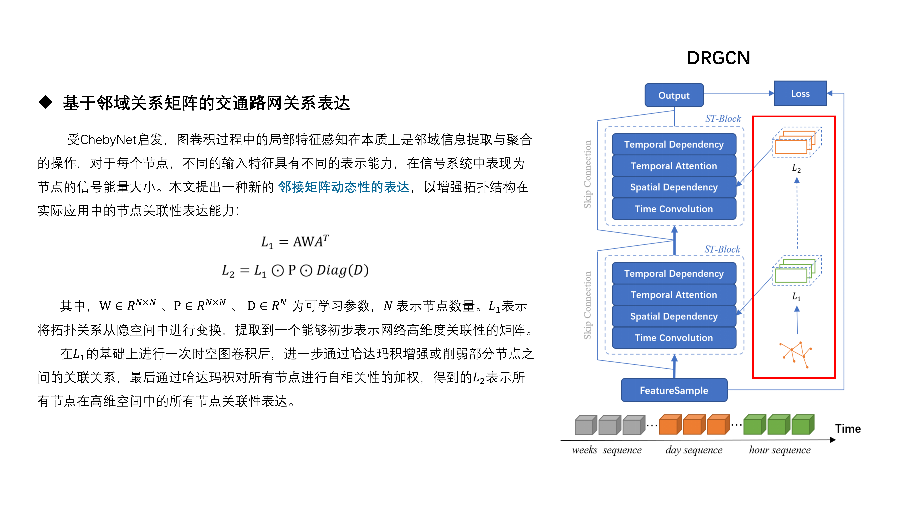
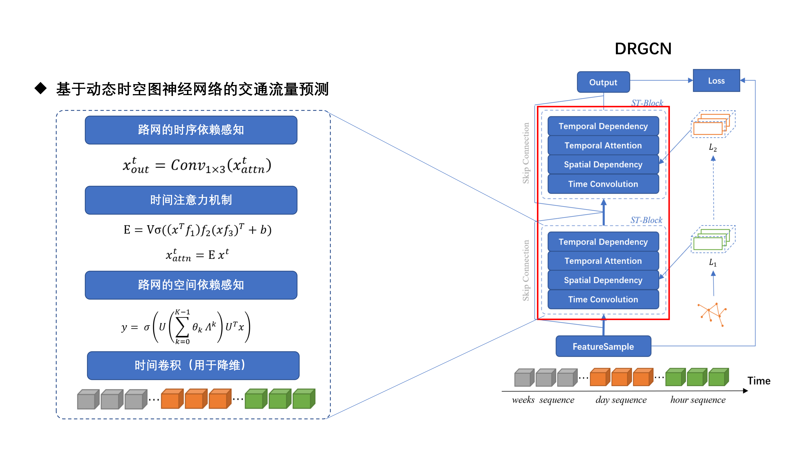

Neighborhood Graph Convolution based Urban Traffic Route Planning System
现有的方法更加注重于对图网络特征提取能力的研究，多数运用GCN直接对时空图数据进行特征建模的研究不仅携带复杂的计算量，同时也带来更多的噪声信息，使得网络性能下降的同时也对算力资源提出了较高的要求。本文针对以上问题，提出关于邻域关系矩阵的时空图网络关系的表达方法。
以往的研究忽略了图关系的表达，更加注重于对静态拓扑结构的利用，这不仅导致网络学习能力变差，也在一定程度上丢失了部分节点直接的隐含关联性，因此在时空图建模的过程中，图的连接关系在流量预测任务中显得尤为重要。本文基于此，设计了基于邻域关系矩阵的动态时空图网络，在捕获节点特征中存在的时序关系的同时动态地调整了节点之间的连接关系，在一定程度上弥补了拓扑结构所定义的静态图的表达。


实验中所有模型的训练次数均为60 epoch，学习率为0.001，均采用Adam优化器，输入数据的总长度为60个时间片，其中包含24个周数据时间片，12个日数据时间片，24个时数据时间片；采用框架为Pytorch 1.8.1版本，Python 3.7版本，CUDA驱动11.1版本，GPU硬件为NVIDIA 2060 6GB单GPU显卡。
| 方法 | PEMSD4 | PEMSD8 | ||
|---|---|---|---|---|
| MAE | RMSE | MAE | RMSE | |
| HA* | 43.15 | 49.52 | 35.04 | 40.05 |
| ARIMA* | 45.14 | 51.24 | 33.60 | 38.34 |
| GRU | 26.66 | 40.21 | 21.78 | 33.24 |
| LSTM | 26.24 | 39.86 | 20.89 | 31.94 |
| GCRN | 23.64 | 35.56 | 19.21 | 28.62 |
| Gated-STGCN | 24.06 | 36.07 | 18.79 | 28.08 |
| ASTGCN | 21.37 | 33.23 | 18.05 | 26.85 |
| DGCN | 20.78 | 32.35 | 16.28 | 24.71 |
| DRGCN（ ours ） | 20.47 | 32.14 | 15.41 | 23.91 |
自适应学习路网节点关联度，不依赖固定拓扑初始化
融合周/日/时多时间粒度特征，捕获复杂时空依赖关系
节点自相关性作为可学习知识，精准特征聚合与筛选
量化描述节点关联性，自动识别路网关键节点与区域
PEMSD4/8数据集上MAE/RMSE指标优于ASTGCN、DGCN等方法
全局邻接矩阵划分为局部相似性计算，提升模型可扩展性
本系统可广泛应用于以下场景：